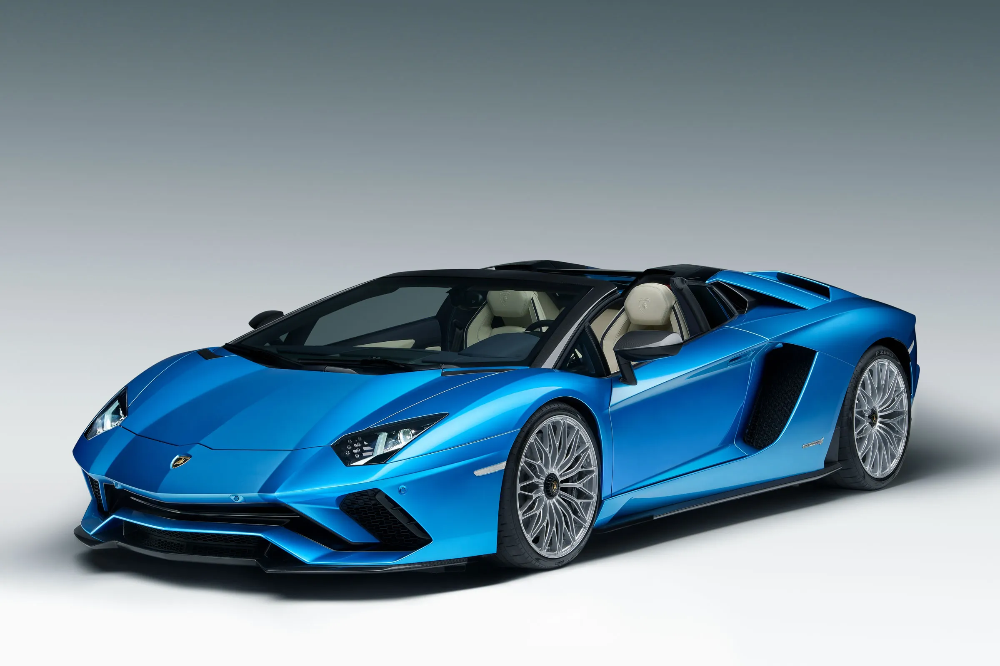
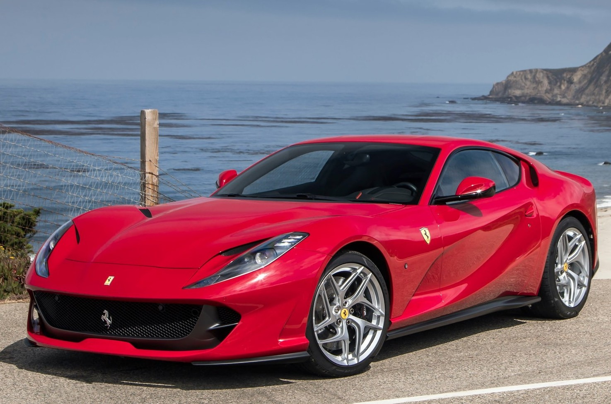
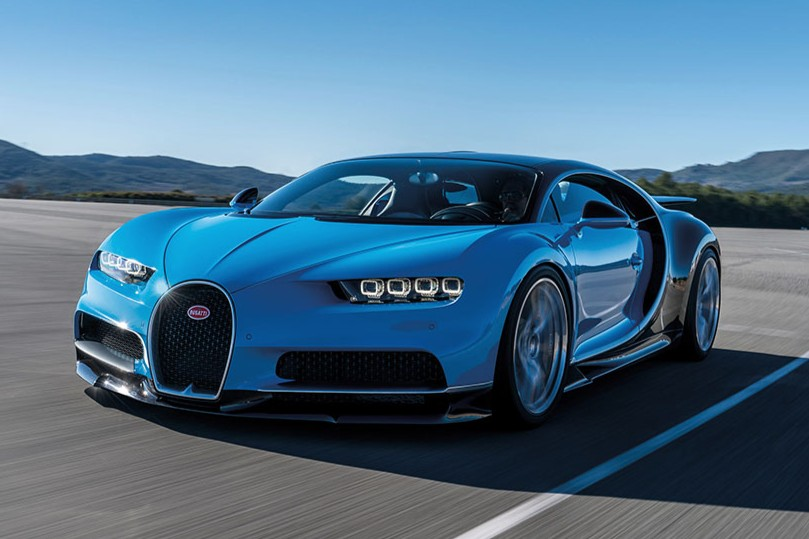

Lamborghini Aventador is a high-performance supercar powered by a naturally aspirated V12 engine. It is known for its aggressive design, loud exhaust note, and extreme performance. The Aventador represents pure speed, power, and Italian engineering excellence.

Ferrari 812 Superfast is one of the most powerful front-engine V12 cars ever produced. It delivers thrilling acceleration, sharp handling, and a legendary Ferrari exhaust sound that excites car enthusiasts worldwide.

Bugatti Chiron is a hypercar equipped with a quad-turbo W16 engine. It combines luxury with insane speed and engineering. The Chiron is one of the fastest and most expensive cars ever built.

Nissan GTR is famously known as Godzilla due to its incredible performance and tuning potential. It delivers supercar-level speed at a relatively affordable price.

BMW M5 is a high-performance luxury sedan
that blends comfort with extreme speed.
It features a twin-turbo V8 engine,
advanced technology, and premium interiors.
The M5 proves that luxury cars can also be powerful.